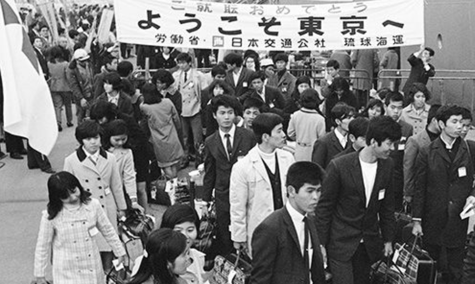

 During the occupation of Japan, the United States indirectly controlled Japan by creating economic reforms. One goal for MacArthur was to demilitarize Japan. This goal was reached in the constitution of 1947. There was complete demilitarization along with seizing of military production. Many attribute this reform to being one of the reasons for the economic miracle. All the resources that were being put into the military were being spent in other ways. The government no longer had to spend money no an estimated 10% of the population that was in the army.
The United States also broke apart the zaibatsu, or Japan business conglomerates. The zaibatsu would get preferential treatment through tax breaks and funds from the government. The holding companies were taken down with the Anti-Monopoly law and the Decentralization law. These conglomerates held monopoly over the markets, they funded and implemented policies that would hurt others and benefit them. The zaibatsu would smother labour unions, maintain relationships similar to those during feudal times, and harmed the Japanese middle class.
The United States also implemented other policies such as land reform and labour democratization. Land reform essentially removed a class of landowners who owned arable farmland but did not farm it themselves. In addition, labour unions were allowed to form, partially due to the dissolution of the zaibatsu.
After the United States left Japan in 1952, then Japan started implementing policy as well. Another part of the success experienced by Japan was the policies that the government implemented. Specifically through the Ministry of International Trade and Industry (MITI). The MITI branched from the Ministry of Commerce and Industry in 1949. The MITI implemented an "inclined production mode" (translated from Japanese). This production mode focused on producing raw materials similar to before the war like cotton and coal. The MITI put a lot of focus on developing the industrial sector. Another part of increased production mode was encouraging women to start working. Not for reasons of equality, but to increase the labour force.
Japan continued growing, through the years eventually reaching a golden era of economic prosperity. Other factors such as the Korean war and instituting keiretsu which were similar to zaibatsu contributed to the economic well being of Japan. In a matter of 30 years, Japan went from being ravaged by war to being an economic powerhouse of the world.